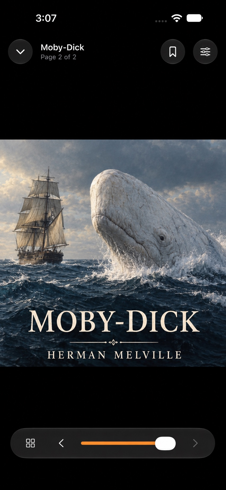

01
Typography with range
Tune size, spacing, margins, columns, colors, and publisher styles. Install your own fonts and save the whole setup as a reusable preset.
Folire brings your EPUB, PDF, comic, and audiobook library to iPhone and iPad—beautifully typeset, deeply customizable, and private by design.

A reader that gets out of the way
Shape the page around your eyes, your hands, and the moment you’re reading in.
Tune size, spacing, margins, columns, colors, and publisher styles. Install your own fonts and save the whole setup as a reusable preset.
Offline narration with voices, speed control, sentence navigation, highlighting, and a sleep timer.
Adaptive auto-scroll follows your preferred reading speed in paginated or continuous layouts.
Assign tap zones, four-direction swipes, keyboard shortcuts, and remote buttons to the actions you use most.
One library, every kind of reading
Import from Files, iCloud Drive, AirDrop, a URL, or the share sheet. Connect OPDS, Calibre, and WebDAV libraries. Everything stays available offline.
Useful intelligence, without the cloud
Folire uses the text already on your device. Your book never needs to become someone else’s data.
Find a passage across your local library and jump straight to its chapter or page.
Ask questions or get a catch-up using only what you’ve already read—fully on device.
Export highlights and annotations as Markdown, plain text, JSON, or CSV.
The reader landscape
Reader apps make different tradeoffs across format support, storefront access, privacy, and library tools. Folire focuses on private, durable tools for the library you control.
| Feature | Folire | Others |
|---|---|---|
| Supported local formats | 11 formatsEPUB, PDF, CBZ/R, TXT, FB2, MOBI, AZW3, MP3, M4A, M4B | Varies by appFrom a few formats to broad format support |
| Direct OPDS / WebDAV libraries | Both | VariesSome connect directly; others use import workflows |
| Spoiler-safe questions & recaps | On device · only text read | No comparable feature found |
| Full-library passage search | On device | Varies by appIn-book search is common; whole-library search varies |
| Safe book-file updates | Preserves place, notes & stats | No comparable feature found |
| Annotation portability | MD · TXT · JSON · CSV | Varies by appSharing, backup, and export options differ |
| Business model | Free tier + $14.99 once | VariesFree, one-time purchase, and subscription models |
| Product account required | No Folire account | Varies by appSome features may depend on a store or service account |
“Others” summarizes a range of reader apps, so feature availability varies by product. “No comparable feature found” means we could not verify an equivalent capability in the public feature material reviewed—not that it is definitively absent. Features and prices can change. See sources.
Private by architecture
Folire requires no Folire account and has no advertising, analytics, tracking SDKs, or developer-operated server. Books live in private app storage. Optional iCloud library sync uses your private iCloud account.
Good questions
DRM-free EPUB, PDF, CBZ, CBR, TXT, FB2, MOBI, and AZW3 books, plus MP3, M4A, and M4B audiobooks. Folire cannot remove or bypass DRM.
Imported books are copied into Folire’s private local storage. If you enable iCloud library sync, Folire uploads book files and reading data to your private iCloud storage so you can open your books on another device. Folire does not upload books to a developer-operated server.
No. The free version supports a five-book library. Folire Pro is a one-time $14.99 purchase for unlimited books and every advanced feature.
Yes. Folire supports OPDS 1 and 2 catalogs, Calibre Content Server, authenticated WebDAV, and direct book URLs.
Folire is available now for iPhone and iPad. Download it on the App Store.
Your next chapter
Folire is available now for iPhone and iPad.